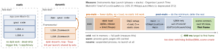

build · folio
In one line: Static code is copied into your binary at link time (no load cost,
but one copy per binary); dynamic code stays a separate Mach-O that dyld maps,
fixes up and initialises at every launch. Launch = pre-main (dyld + runtime
init) + post-main (UIKit + your didFinishLaunching → first frame); aim for
first frame in ≤ 400 ms.
Download PDF Print view LaTeX source


Linking
.a= archive of.o, static, no resources..framework= bundle (binary + headers + modulemap + resources), static or dynamic..xcframework= per-platform slices (ios-arm64,ios-arm64_x86_64-simulator, …): a fatlipobinary cannot hold device-arm64 and simulator-arm64.- Dynamic → Embed & Sign (copied to
App.app/Frameworks, found via@rpath=@executable_path/Frameworks(unverified)). Static and system frameworks → Do Not Embed. - System frameworks sit in the dyld shared cache (pre-linked); your dylibs pay full load + fixup cost. dyld3/4 cache a launch closure and use chained fixups (iOS 13.4+ targets), but many dylibs still hurt.
- Mergeable libraries (Xcode 15): framework built with
MERGEABLE_LIBRARY, app withMERGED_BINARY_TYPE— dynamic in Debug (fast iteration), merged into the app binary in Release. - Swift binary frameworks need
BUILD_LIBRARY_FOR_DISTRIBUTION = YES(.swiftinterface, module stability) or only the exact compiler can import them.
Launch fixes
- Fewer dylibs (static/merge); no
+load(use+initializeor explicit init); Swift globals/static letare already lazy — but touching one indidFinishLaunchingruns its init right there. - Build only the first screen; lazy DI factories; no sync disk/network on main; defer SDKs to after the first frame, heavy work off the main thread.
- Static
LaunchScreenis drawn by the system — free; no splash delays. - Profile Release, cold, on a low-end device.
Build settings — who wins
- Target = one product; configuration (Debug/Release) = a named set of setting values; scheme = which targets + which configuration per action (Run/Test→Debug, Profile/Archive→Release by default(unverified)). Optimization level is a configuration setting — “edit the scheme” is the wrong answer.
- Precedence, highest first:
xcodebuild SETTING=v→ target (pbxproj) → target.xcconfig→ project (pbxproj) → project.xcconfig→ SDK default. Assigning replaces; write$(inherited)to append. - Swift
#if DEBUGreadsSWIFT_ACTIVE_COMPILATION_CONDITIONS; ObjC readsGCC_PREPROCESSOR_DEFINITIONS— define it in both.
Example
func application(_ a: UIApplication, didFinishLaunchingWithOptions
o: [UIApplication.LaunchOptionsKey: Any]?) -> Bool {
CrashReporter.start() // only what must exist before frame 1
return true // root UI built by the scene delegate
}
// after first frame (root view .task / first viewDidAppear):
Task.detached(priority: .utility) {
Analytics.configure(); await ImageCache.warm() } // off main// Release.xcconfig
#include "Base.xcconfig"
OTHER_LDFLAGS = $(inherited) -ObjC // keep Pods'/parent flags
SWIFT_ACTIVE_COMPILATION_CONDITIONS = $(inherited) RELEASETraps
- Static + Embed & Sign = the code ships twice (inside the binary and in
Frameworks/); App Store validation may reject it(unverified). - Same static lib linked into a dynamic framework and the app → two copies; the ObjC runtime warns of a duplicate class, and singletons split.
- “Library not loaded: @rpath/…” = linked but not embedded.
- The linker loads a static-lib member only for a needed symbol: a category-only
.ovanishes (unrecognized selector);-ObjC(unverified) loads it. DispatchQueue.main.asyncfromdidFinishLaunchingstill runs on main — it only moves work past the first frame, not off the thread.DYLD_PRINT_STATISTICS: dyld4 no longer reads it; use the App Launch instrument. Prewarming may create the process and load its dylibs long before the tap, so don’t time launch from insidemain.
Remember
“Static = copy, dynamic = dyld; pre-main is dylibs + initialisers; post-main is
your code; first frame in 400 ms, or the watchdog’s 8badf00d.”